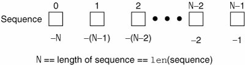
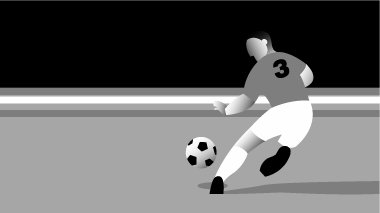

6.1. SequencesSequence types all share the same access model: ordered set with sequentially indexed offsets to get to each element. Multiple elements may be selected by using the slice operators, which we will explore in this chapter. The numbering scheme used starts from zero (0) and ends with one less than the length of the sequencethe reason for this is because we began at 0. Figure 6-1 illustrates how sequence items are stored. Figure 6.1. How sequence elements are stored and accessed 6.1.1. Standard Type OperatorsThe standard type operators (see Section 4.5) generally work with all sequence types. Of course, one must comparisons with a grain of salt when dealing with objects of mixed types, but the remaining operations will work as advertised. 6.1.2. Sequence Type OperatorsA list of all the operators applicable to all sequence types is given in Table 6.1. The operators appear in hierarchical order from highest to lowest with the levels alternating between shaded and not.
Membership (in, not in)Membership test operators are used to determine whether an element is in or is a member of a sequence. For strings, this test is whether a character is in a string, and for lists and tuples, it is whether an object is an element of those sequences. The in and not in operators are Boolean in nature; they return true if the membership is confirmed and False otherwise. The syntax for using the membership operators is as follows: obj [not] in sequence Concatenation (+)This operation allows us to take one sequence and join it with another sequence of the same type. The syntax for using the concatenation operator is as follows: sequence1 + sequence2 The resulting expression is a new sequence that contains the combined contents of sequences sequence1 and sequence2. Note, however, that although this appears to be the simplest way conceptually to merge the contents of two sequences together, it is not the fastest or most efficient. For strings, it is less memory-intensive to hold all of the substrings in a list or iterable and use one final join() string method call to merge them together. Similarly for lists, it is recommend that readers use the extend() list method instead of concatenating two or more lists together. Concatenation comes in handy when you need to merge two sequences together on the fly and cannot rely on mutable object built-in methods that do not have a return value (or more accurately, a return value of None). There is an example of this case in the section below on slicing. Repetition ( * )The repetition operator is useful when consecutive copies of sequence elements are desired. The syntax for using the repetition operator is as follows: sequence * copies_intThe number of copies, copies_int, must be an integer (prior to 1.6, long integers were not allowed). As with the concatenation operator, the object returned is newly allocated to hold the contents of the multiply replicated objects. Slices ( [ ], [ : ], [ : : ] )To put it simply: sequences are data structures that hold objects in an ordered manner. You can get access to individual elements with an index and pair of brackets, or a consecutive group of elements with the brackets and colons giving the indices of the elements you want starting from one index and going up to but not including the ending index. Now we are going to explain exactly what we just said in full detail. Sequences are structured data types whose elements are placed sequentially in an ordered manner. This format allows for individual element access by index offset or by an index range of indices to select groups of sequential elements in a sequence. This type of access is called slicing, and the slicing operators allow us to perform such access. The syntax for accessing an individual element is: sequence[index]sequence is the name of the sequence and index is the offset into the sequence where the desired element is located. Index values can be positive, ranging from 0 to the maximum index (which is length of the sequence less one). Using the len() function (which we will formally introduce in the next section), this gives an index with the range 0 <= index <= len (sequence)-1. Alternatively, negative indexes can be used, ranging from -1 to the negative length of the sequence, -len(sequence), i.e., -len(sequence) <= index <= -1. The difference between the positive and negative indexes is that positive indexes start from the beginning of the sequences and negative indexes work backward from the end. Attempting to retrieve a sequence element with an index outside of the length of the sequence results in an IndexError exception: >>> names = ('Faye', 'Leanna', 'Daylen')
>>> print names[4]
Traceback (most recent call last):
File "<stdin>", line 1, in ?
IndexError: tuple index out of rangeBecause Python is object oriented, you can also directly access an element of a sequence (without first having to assign it to a variable) like this: >>> print ('Faye', 'Leanna', 'Daylen')[1]
LeannaThis comes in handy especially in cases where you have called a function and know that you are going to get back a sequence as a return value but are only interested in one or more elements and not the whole thing. So how do we select multiple elements? Accessing a group of elements is similar to accessing just a single item. Starting and ending indexes may be given, separated by a colon ( : ). The syntax for accessing a group of elements is: sequence[starting_index:ending_index] Using this syntax, we can obtain a "slice" of elements in sequence from the starting_index up to but not including the element at the ending_index index. Both starting_index and ending_index are optional, and if not provided, or if None is used as an index, the slice will go from the beginning of the sequence or until the end of the sequence, respectively. In Figures 6-2 to 6-6, we take an entire sequence (of soccer players) of length 5, and explore how to take various slices of such a sequence. Figure 6-2. Entire sequence:sequence or sequence[:]
Figure 6-3. Sequence slice: sequence[0:3] or sequence[:3]
Figure 6-4. Sequence slice: sequence[2:5] or sequence[2:]
Figure 6-5. Sequence slice: sequence[1:3]
Figure 6-6. Sequence slice: sequence[3] Extended Slicing with Stride IndicesThe final slice syntax for sequences, known as extended slicing, involves a third index known as a stride. You can think of a stride index like a "step" value as the third element of a call to the range() built-in function or a for loop in languages like C/C++, Perl, PHP, and Java. Extended slice syntax with stride indices has actually been around for a long time, built into the Python virtual machine but accessible only via extensions. This syntax was even made available in Jython (and its predecessor JPython) long before version 2.3 of the C interpreter gave everyone else access to it. Here are a few examples:
Here are a few examples: >>> s = 'abcdefgh' >>> s[::-1] # think of it as 'reverse' 'hgfedcba' >>> s[::2] # think of it as skipping by 2 'aceg' More on Slice IndexingThe slice index syntax is more flexible than the single element index. The starting and ending indices can exceed the length of the string. In other words, the starting index can start off well left of 0, that is, an index of -100 does not exist, but does not produce an error. Similarly, an index of 100 as an ending index of a sequence with fewer than 100 elements is also okay, as shown here: >>> ('Faye', 'Leanna', 'Daylen')[-100:100]
('Faye', 'Leanna', 'Daylen')Here is another problem: we want to take a string and display it in a loop. Each time through we would like to chop off the last character. Here is a snippet of code that does what we want: >>> s = 'abcde' >>> i = -1 >>> for i in range(-1, -len(s), -1): ... print s[:i] ... abcd abc ab a However, what if we wanted to display the entire string at the first iteration? Is there a way we can do it without adding an additional print s before our loop? What if we wanted to programmatically specify no index, meaning all the way to the end? There is no real way to do that with an index as we are using negative indices in our example, and -1 is the "smallest" index. We cannot use 0, as that would be interpreted as the first element and would not display anything: >>> s[:0] '' Our solution is another tip: using None as an index has the same effect as a missing index, so you can get the same functionality programmatically, i.e., when you are using a variable to index through a sequence but also want to be able to access the first or last elements: >>> s = 'abcde' >>> for i in [None] + range(-1, -len(s), -1): ... print s[:i] ... abcde abcd abc ab a So it works the way we want now. Before parting ways for now, we wanted to point out that this is one of the places where we could have created a list [None] and used the extend() method to add the range() output, or create a list with the range() elements and inserted None at the beginning, but we are (horribly) trying to save several lines of code here. Mutable object built-in methods like extend() do not have a return value, so we could not have used: >>> for i in [None].extend(range(-1, -len(s), -1)): ... print s[:i] ... Traceback (most recent call last): File "<stdin>", line 1, in ? TypeError: iteration over non-sequence The reason for the error is that [None].extend(...) returns None, which is neither a sequence nor an iterable. The only way we could do it without adding extra lines of code is with the list concatenation above. 6.1.3. Built-in Functions (BIFs)Before we look at sequence type BIFs, we wanted to let you know that you will be seeing the term iterable mixed in with sequence. The reason for this is that iterables are more generalized and include data types like sequences, iterators, or any object supporting iteration. Because Python's for loops can iterate over any iterable type, it will seem like iterating over a pure sequence, even if it isn't one. Also, many of Python's BIFs that previously only accepted sequences as arguments have been upgraded to take iterators and iterator-like objects as well, hence the basket term, "iterable." We will discuss in detail in this chapter BIFs that have a strong tie to sequences. We will discuss BIFs that apply more specifically to iteration in loops in Chapter 8, "Conditionals and Loops." Conversion/CastingThe list(), str(), and tuple() BIFs are used to convert from any sequence type to another. You can also think of them as casting if coming over from another language, but there really is no conversion or casting going on. These "converters" are really factory functions (introduced in Chapter 4) that take an object and (shallow) copy its contents into a newly generated object of the desired type. Table 6.2 lists the sequence type conversion functions.
Again, we use the term "convert" loosely. But why doesn't Python just convert our argument object into another type? Recall from Chapter 4 that once Python objects are created, we cannot change their identity or their type. If you pass a list to list(), a (shallow) copy of the list's objects will be made and inserted into the new list. This is also similar to how the concatenation and repetition operators that we have seen previously do their work. A shallow copy is where only references are copied...no new objects are made! If you also want copies of the objects (including recursively if you have container objects in containers), you will need to learn about deep copies. More information on shallow and deep copies is available toward the end of this chapter. The str() function is most popular when converting an object into something printable and works with other types of objects, not just sequences. The same thing applies for the Unicode version of str(), unicode(). The list() and tuple() functions are useful to convert from one to another (lists to tuples and vice versa). However, although those functions are applicable for strings as well since strings are sequences, using tuple() and list() to turn strings into tuples or lists (of characters) is not common practice. OperationalPython provides the following operational BIFs for sequence types (see Table 6.3 below). Note that len(), reversed(), and sum() can only accept sequences while the rest can take iterables. Alternatively, max() and min() can also take a list of arguments
We will provide some examples of using these functions with each sequence type in their respective sections. |